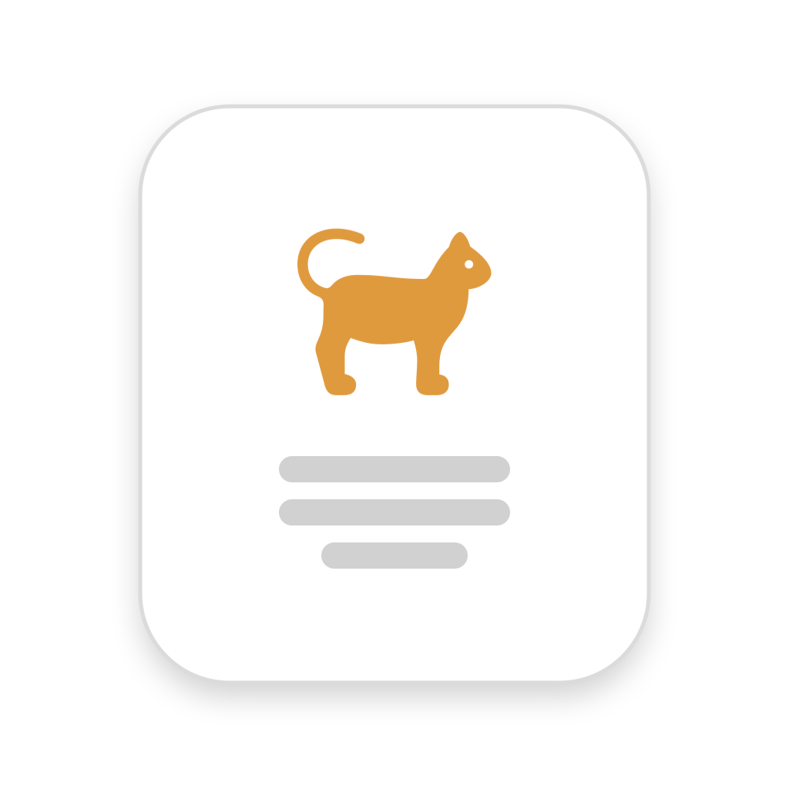

Privacy Policy
Cat-a-log · Effective 31 July 2026
Who we are
Cat-a-log ("the app") is a pet health record app developed by Adam Makowski ("we", "us"). Contact: cat.a.log.app.mail@gmail.com.
What we collect
- Account: your email address, to create your account and sign you in via a one-time code.
- Your pet data: everything you enter — pet profiles (name, species, breed, sex, birth date, weight, microchip number, notes, photo) and health records (vaccinations, medications and doses, vet visits, weight history, feeding, and any documents or photos you attach).
- Messages you send through sharing: if you share a pet with a sitter, the messages exchanged and any care suggestions they submit are stored on our servers so both sides can see them.
The app contains no advertising, no analytics SDK and no tracking of any kind.
How we use it
Solely to provide the app: storing your records, syncing them across your devices, sending the reminders you set, and passing messages between you and anyone you choose to share a pet with. We do not sell your data, show ads, or use third-party analytics or tracking.
Sharing a pet with a sitter
You can generate a sitter code that gives another person time-limited, read-mostly access to one pet. You choose what it covers — for example feeding, medications, vet visits, notes — and when it expires.
- The person holding the code needs no account. They can see what you shared, mark meals or doses as done if you allowed it, and exchange messages with you.
- Access ends automatically at the expiry you set, and you can delete a code at any time to end access immediately.
- A code grants access to that one pet only — never to your other pets, your account, or your email address.
- The messages and suggestions from that sharing session are stored on our servers and are visible to you and to the person holding that code.
Storage & processing
Your synced data is stored on Supabase infrastructure in the European Union (eu-central-1). Data in transit is encrypted (HTTPS) and access is restricted per account by row-level security.
Our processors are:
- Supabase — database, authentication and file storage.
- Brevo — delivery of the one-time sign-in codes we email you.
- Apple — App Store purchase and subscription processing. We never see your payment details.
Retention & deletion
Your data is kept while your account exists.
- You can delete your account in-app (Settings → Delete account). This removes your synced data, including attached files, from our servers.
- Deleting a pet also removes its records, along with any messages and suggestions from sharing sessions for that pet.
- Records kept only on your device stay under your control on the device; you can remove them by deleting the app.
Your rights (GDPR)
You may request access, correction, export, or deletion of your data. Account deletion is available directly in the app; for other requests contact us at cat.a.log.app.mail@gmail.com. You also have the right to lodge a complaint with your local data protection authority.
On-device permissions
The app may ask for Camera (to scan a microchip barcode), Photo Library (to save your pet's passport or attach documents), and Notifications (to deliver reminders). Each is used only for that feature, and the app works without granting them.
Children
The app is not directed at children under 13 and we do not knowingly collect their data.
Changes
We may update this policy; the effective date above will change. Material changes will be surfaced in the app or by email.